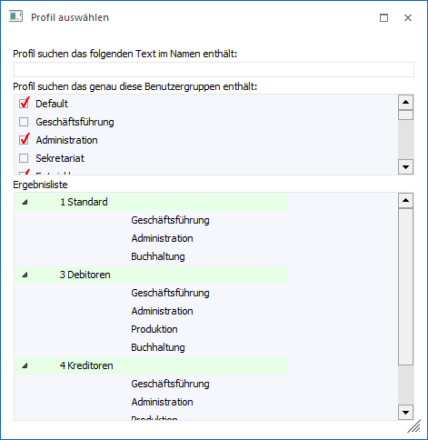
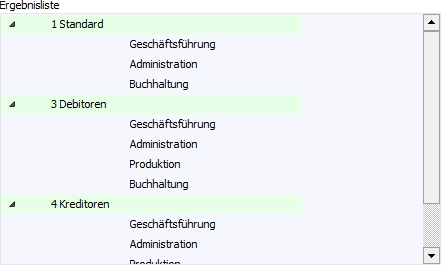
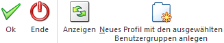

In dem Fenster "Profil auswählen", welches über die "Benutzeranlage" (Register "Benutzergruppen" - Unterregister "Berechtigung" - Button "Anzeige der vorhandenen Profile") geöffnet werden kann, können alle angelegten Berechtigungsprofile im Zusammenhang mit den Benutzergruppen angezeigt werden.

Ø Profil suchen das folgenden Text im Namen enthält
Wird in diesem Feld ein Werte eingegeben und der Button "Anzeigen" angewählt, dann werden in der Tabelle "Ergebnisliste" alle Berechtigungsprofile angezeigt, welche den Suchbegriff enthalten.
Ø Profil suchen das genau diese Benutzergruppen enthält
Aus der Tabelle können die Benutzergruppen gewählt werden, welche in den Berechtigungsprofilen enthalten sein sollen. Durch Anwahl des Buttons "Anzeigen" werden in der Tabelle "Ergebnisliste" alle Berechtigungsprofile angezeigt, die zumindest eine der ausgewählten Gruppe beinhaltet.
Hinweis
Bei der Suche ist darauf zu achten, dass immer beide Einschränkungen ("Profil suchen das folgenden Text im Namen enthält" und "Profil suchen das genau diese Benutzergruppen enthält") wirken.
Tabelle "Ergebnisliste"

In der Tabelle "Ergebnisliste" werden die Berechtigungsprofile, gemäß der zuvor getroffenen Selektion, angezeigt. Durch einen Klick auf das Symbol , welches vor dem jeweiligen Berechtigungsprofil angezeigt wird, können die Benutzergruppen, welche auf diese Berechtigungsprofil zugreifen dürfen, angezeigt werden.
Buttons

Ø Ok
Der Buttons "Ok" bzw. die Taste F5 hat an dieser Stelle keine Funktion.
Ø Ende
Durch Anklicken des "Ende"-Buttons bzw. durch Drücken der "ESC"-Taste wird das Fenster geschlossen.
Ø Anzeigen
Durch Anwahl des Buttons "Anzeige" wird die Tabelle "Ergebnisliste" aufgrund der Eingaben in den Feldern "Profil suchen das folgenden Text im Namen enthält" und "Profil suchen das genau diese Benutzergruppen enthält" gefüllt.
Ø Neues Profil mit den angewählten Benutzergruppen anlegen
Durch Anwahl des Buttons "Neues Profil mit den angewählten Benutzergruppen anlegen" wird in den Programmbereich "Berechtigungsprofile" gewechselt und dort automatisch ein neues Profil, mit den unter "Profil suchen das genau diese Benutzergruppen enthält" selektierten Gruppen, angelegt. Der Profilname ist manuell zu vergeben.
Hinweis
Die Speicherung des Berechtigungsprofils erfolgt erst durch Anwahl des "Ok"-Buttons bzw. der Taste F5 im Programmbereich "Berechtigungsprofile".